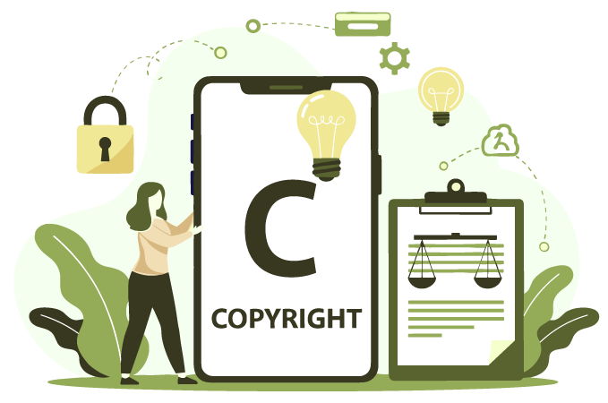

온라인 기사에서 타인의 사진을 ‘예시 이미지’로 복제해 게재하는 행위가 공정이용인지가 쟁점이 되는 사례가 늘고 있다. Romanova 사건에서 제1심 법원은 피고의 사진 게재를 공정이용으로 보았으나, 항소심은 공정이용이 아니라고 판단했다. 이 글은 공정이용 판단의 제1요소(이용의 목적 및 성격)를 ‘변형적 이용’과 ‘이용의 정당화’로 나누어 검토한 항소심의 정리 방식을 소개하고, 저작권과 공정이용이 공공의 이익을 달성하기 위한 수단이라는 관점을 설명한다. 그리고 ‘원고 또는 그 저작물에 대한 비평·논평’이 아닌 경우에도 정당한 이용이 될 수 있는 유형을 정리해, 2차적저작물작성과 공정이용의 경계 및 법관의 예술성 평가가 개입될 때 생길 수 있는 문제를 알아본다.
01 Romanova v. Amilus Inc.1 개요
원고는 러시아 국적 직업 사진작가며, 주수입원은 온라인 또는 오프라인 프린트 발행된 사진 이용료다. 원고는 National Geographic Magazine 기사(이하 ‘원고 측 기사’)에 러시아 여성이 부엌에서 반려동물인 뱀 두 마리와 함께 있는 사진 게재를 허락하였다.2 피고는 www.ai-ap.com 운영자인데,3 피고 웹사이트 기사 “Trending: Dogs, Cats ... and Other Pets, to Start Off 2018”(2017년 12월 31일 발행함. 말줄임표는 원문 제목 그대로임. 이하 ‘피고 기사’)에 원고 측 기사에 실린 원고 사진을 복제하여 게재하였다. 피고 기사는 ① “온라인에서 발견되는 반려동물 사진이 계속 늘어남에 초점을 두고 준정기적 시리즈(semi-regular series)의 연속 발행된 기사”며, ② ‘뱀 사진도 몇 장 넣었음’이라는 설명을 붙였고, ③ 원고 사진 캡션에 “Intimate Photos of People and Their Beloved Pet Snakes”라고 원고 측 기사 제목을 기재했다. 또한, ④ 피고 기사에는 사람과 반려동물을 함께 찍은 사진 10장이 실렸는데, 모두 다른 출판물에서 복제한 것이 명백하고, ⑤ 피고 웹사이트 기사를 보려면 $5/월 구독료를 내야 하며, 피고 웹사이트는 다른 상품들도 판매하고 있었다. 제1심 법원은 피고의 원고 사진 게재가 공정이용이라고 판단했으나, 항소심은 공정이용이 아니라고 판단하였다. 이 사건은 사실관계가 복잡하거나 새로운 유형이든지 공정이용 판단이 힘든 사안은 아니다. 하지만, 1990년에 공정이용 판단 제1고려요소 ‘이용의 목적 및 성격’의 핵심을 ‘변형적 이용’(transformative use)으로 설명한 피에르 레발(Pierre N. Leval) 판사가4 이 사건을 담당하여, ① 이용의 목적 요소에서 고려할 세부 고려요소를 변형적 이용과 정당한 이용으로 나누고, ② 이른바 공정이용 법리의 기원이라고 소개되는 Folsom 판결과 함께,5 연방대법원의 캠벨, 오라클, 워홀 판결에서의 ‘정당한 이용’을 설명하고, ③ 기존 판결 중 ‘원고 또는 그 저작물에 대한 비평·논평’ 외의 정당한 이용 유형을 제시한 점에 의미가 있다.
02 저작권법, 저작권, 공정이용 그리고 공공의 이익
이 사건과 같이 공정이용인지를 그리 어렵지 않게 판단할 수 있는
경우에, 일반적으로 법원은 미국 연방저작권법 제107조 공정이용
규정부터 설명한다. 그럼에도 레발 판사는 저작권법의 목적과 기능,
그리고 이를 달성하기 위한 저작권과 공정이용의 역할부터
설명하였다. 그에 따르면, 저작권법, 저작권, 공정이용 모두 공공의
이익(이하 ‘공익’) 달성을 위한 수단이다.
우선 저작권[법]의 궁극적인 목적은 “공중의 지식과 이해를
넓힘이며, 이 목적 달성을 위해 저작권은 잠재적 창작자에게 저작물
복제에 대한 배타적 통제 권한을 줌으로써, 정보 가치가 있고
지적으로 풍부한 저작물을 공중이 소비할 수 있도록, 창작에 대한
경제적 유인을 제공”한다. (Authors Guild v. Google, Inc. (2d Cir.
2015). 이하 ‘Google Books’) 이를 위해 저작권법은 “공익 관련
상충하는 주장들(주로 ‘예술 창작’과 ‘공중 이용’)” 사이의 균형을
잡는다. (Twentieth Century Music Corp. v. Aiken. S.Ct. 1975)
보호 측면에서 복제권, 2차적저작물작성권, 전시권 등 배타적
권리들은 예술가에게 창작에 대한 경제적 유인을 주고, 예술가의
창작물은 공중에게 이익으로(public benefit) 돌아간다. (Andy
Warhol Found. for the Visual Arts, Inc. v. Goldsmith. S.Ct.
2023. 이하 ‘Warhol’. Harper & Row Publishers, Inc. v. Nation
Enters. S.Ct. 1985 인용함. 이하 ‘Harper’)
반면, 저작권을 엄격하게 적용하면 오히려 저작권법이 장려하려는
바로 그 창작성을 위축시킬 수 있으므로, 오랜 기간 코먼.로에서
인정된 공정이용 법리를 1976년에 저작권법 제107조에 규정하였다.
(Warhol. 코먼.로 공정이용 법리 역사는 Google Books 참조.)
03 변형적 이용, 이용의 정당성 그리고 Campbell
이어서 레발 판사는 공정이용 판단 제1고려요소인 ‘이용의 목적 및
성격’에 관한 자신의 논문을 처음 인용한 미국 연방대법원
Campbell v. Acuff-Rose Music, Inc. (1994. 이하 ‘Campbell’)에
나타난 ‘변형적 이용’과 ‘이용의 정당성’을 설명하였다.
Campbell은 ‘피고 복제물이 단순히 원고 저작물의 목적을
대체하는지(Folsom v. Marsh. 1841. 이하 ‘Folsom’), 아니면
추가된 목적 또는 다른 성격 등 뭔가 새로운 것을 더함으로써
새로운 표현, 의미, 메시지로 원고 저작물을 변경하였는지, 즉
변형적인지와 그 정도’를 판단한다고 하였다. 그리고 원고 저작물
대체 위험이 있는 경우보다 변형적 이용이 제1요소에서 공정이용
쪽으로 인정될 가능성이 높다고 하였다.

변형적 이용의 본보기가 되는 대표 사례로는 ① 패러디 대상물을
조롱(ridicule)할 목적으로 광범위하게 인용하는(extensive
quotation) ‘패러디’, ② 잠재적 독자들이 대상물의 문체를 맛볼 수
있도록 제한적으로 인용하는(limited quotation) ‘서평’, ③ 유명한
공적 인물의 태도, 생각, 편견 등을 드러낼 목적으로 그들의 연설,
출판물, 미공표 문서들을 인용하는 ‘전기문’ 등이 있다. 다만, 위
사례 관련 판결은 찾기 힘든데, 레발 판사는 그 이유를 ① 위 대표
사례들의 경우에는 공정이용이라는 판결 결과가 명백하고 ② 서평의
경우에 오히려 저자에게 도움이 되기 때문에, 저작권 침해 소송 제기
자체가 흔치 않을 것이라는 점에서 찾았다.
Campbell은 또한 ‘복제의 정당성(justification)’이 중요함을
강조했는데, 레발 판사는 피고가 원고 저작물을 복제함으로써
전달하는 메시지 성질(nature of the message)에 따라 그 판단이
달라질 것이라고 하였다. Campbell은 이를 패러디와 풍자(satire)의
구별을 통해 설명하였는데, ‘피고 복제물이 원고 또는 그 저작물을
비평·논평하는지’가 ‘이용의 정당성’으로서 공정이용 판단에서
중요함을 강조하였다: 『패러디는 다른 [유형의] 논평·비평과
마찬가지로 공정이용이다. ‘패러디 정의의 핵심(nub of the
definitions) 및 패러디스트[피고] 주장의 본질(heart)’은 “최소한
부분적으로라도 선행 저자[원고] 작품을 논평하는 새로운 작품을
창작하기 위해 선행 저자 작품 일부 요소를 이용함”이다. 반면,
[피고] 논평에 [원고] 작품의 내용·스타일에 대한 비평적 관련이
없고, 단지 ㉠ 관심을 끌거나 ㉡ 새로운 무엇인가를 만들어 내는
수고를 피하려고 [원고] 작품을 이용했다면, [피고] 이용이
공정하다는 주장은 그만큼 약해진다. 패러디는 [원고 또는 그
저작물]에 대한 비평·논평을 위해 [원고] 작품을 흉내 내는
방식이므로 [원고] 작품을 이용해야 하지만, 풍자는 [원고 또는 그
저작물에 대한 비평·논평이 아니므로] 원고 작품 이용의 정당성이
요구된다.』
04 Campbell, Google Books, Oracle 그리고 Warhol
Campbell이 ‘원고 또는 그 저작물에 대한 비평·논평’이 ‘정당한
이용’으로서 중요함을 강조했음에도, Campbell 이후 처음에 법원들은
위 인용 부분이 패러디 사건에만 적용된다고 가정하고, [패러디
이외의] 다른 유형 사건에서는 위 인용 부분에 별로 주목하지
않았다. 그러나 제2연방항소법원은 Google Books에서 Campbell을
인용하며, ① 단지 원저자 표현이 2차 저자의 [원고 저작물과는] 다른
메시지를 잘 전달한다는 이유만으로, 2차 저자가 원저자 표현을
자유롭게 통째로 이용할 수 있는 것은 아니고, 이용의
정당성(justification for the taking)이 필요하며, ② 정당한 이용이
가장 잘 인정되는 경우는 원고 또는 그 저작물에 대한
논평·비평이고, ③ 원고 또는 그 저작물과 관계없는 의미를 전달하는
피고 복제물도 공정이용이 될 수 있으나, 피고는 이용의 정당성을
증명해야 한다고 설명한 바 있다.
그리고 2023년 Warhol은 Campbell의 ‘이용의 정당성’
요건(requirement)이6 패러디 사건뿐만 아니라 모든
공정이용 사건에 일반적으로 적용됨을 명백히 밝혔다. 한편, Warhol
소수 의견은 Google LLC v. Oracle America, Inc. (S.Ct. 2021. 이하
‘Oracle’)이 Campbell에서 요구한 ‘피고 복제물이 원고 또는 그
저작물을 대상(target)으로 하였음’을 묵시적으로
폐기하였다는(implicitly disavowed and abandoned) 결론을 내린
것으로 보이나, 레발 판사는 원고 또는 그 저작물에 대한
비평·논평이 유일한 정당한 이용은 아니라며, 피고 복제물이 원고
저작물에 대한 수요를 대체하지 않는 다른 정당한 이용 유형을
제시하였다.
05 원고 또는 그 저작물에 대한 비평·논평 외의 정당한 이용 유형
❶ 원고 또는 그 저작물에 관한 정보를 공중에 제공함.
- 잠재적 독자들이 관심 있는 용어를 포함한 서적을 찾을 수 있도록 서적 수백만 권을 복제하여 컴퓨터 데이터베이스화 한 행위. (독자들이 서적의 상당 부분을 읽을 수는 없도록 함.) Google Books와 Authors Guild, Inc. v. HathiTrust (2d Cir. 2014. 이하 ‘HathiTrust’)
- 잠재적 독자들이 관심 있는 용어가 어떤 서적에 포함되었을 뿐만 아니라, 그 용어가 사용된 맥락을 통해서 그 서적이 그 독자가 관심 있는 서적인지를 결정할 수 있도록 도울 목적으로 부분적 스니펫(fragmentary snippets)을 발행함. (독자들이 부분적 스니펫 이상은 읽을 수 없도록 함.) Google Books
- 유명인 사후에 그의 편견, 부정직함, 잔인함을 보여주기 위해 그의 미공표 일기를 전기문에 인용함(quote). New Era Publications Int’l, ApS v. Henry Holt & Co. (S.D.N.Y. 1988)
- 자녀 양육 소송에서 어머니는 아버지가 부모로서 자격 없음을 증명할 목적으로 아버지가 쓴 미발행 자서전을 증거로 제출함. 그 자서전에는 그가 자신의 아버지를 살해했음을 인정하는 내용이 있었음. Bond v. Blum (4th Cir. 2003)
❷ 원고 저작물 관련 서비스를 제공함.
- 텔레비전 방송을 시청할 정당한 권원 있는 자가 방송 이후 편한 시간에 개인적, 비상업적, 그리고 단 한 번 시청할 목적으로, 텔레비전 방송을 녹화하는 새로운 기술을 이용함. Sony Corporation of America v. Universal City Studios, Inc. (S.Ct. 1984)
- 인터넷 검색 엔진이 인터넷 이미지를 작은 썸네일로 복제하여, 인터넷 이용자가 원본 정보가 있는 사이트로 이동할 수 있는 링크를 제공함(썸네일의 작은 크기와 낮은 해상도 때문에 복제된 원본 이미지를 대체하여 장식용으로 이용할 수 없었음.). In Kelly v. Arriba Soft Corp. (9th Cir. 2003)과 Perfect 10, Inc. v. Amazon.com, Inc. (9th Cir. 2007)
- 저작물을 시각장애인이 읽을 수 있는 포맷으로 변환함(관련 시장이 작아 저작권자들이 수익 목적으로 이 시장에서 저작권을 활용할 것 같지 않기 때문에 대체 가능성 인정하기 힘듦.). HathiTrust
- 과학 문헌을 열악한 실험실 환경에서 종이보다 더 잘 버틸 수 있는 재질로 복제함. American Geophysical Union v. Texaco Inc. (S.D.N.Y. 1992)
❸ 공익 관련 가치가 큰 정보 또는 공중에 중요한 서비스를 제공함.
- 구글이 서적 수백만 권을 데이터베이스로 복제하여, 영어 사용법을 10년 단위로 비교하는 역사적 차트를 제공하는 ngram viewer 서비스가 가능해짐. (복제된 서적을 읽을 수는 없음.) Google Books
- 어느 회사의 최근 실적에 관해 그 회사 경영진과 선별된 브로커들 사이에 비공개로 진행한 컨퍼런스콜 내용(저작물)을 금융정보회사가 유포함으로써, 매우 중요한 증권시장 정보를 투자자와 분석가들에게 제공함. (이 경우 복제된 녹음물의 가치는 저작권으로 보호되는 표현형식이 아닌, 보호되지 않는 정보에 있음.) Swatch Grp. Mgmt. Servs. Ltd. v. Bloomberg L.P. (2d Cir. 2014)
- 지역 신문사가 추문 대상이 되어 미인 대회 우승자 자격을 박탈당하게 한 사진을 게재한 행위는, 자격 박탈이라는 제재가 적절한지에 관한 공중의 의견을 형성할 수 있도록 함. (신문 게재 사진 품질이 낮아서 원본을 대체하여 장식용으로 쓰이기에 적절하지 않았음.) Núñez v. Caribbean Int’l News Corp. (1st Cir. 2000)
- 교육기관이 학생 논문 표절을 탐지할 수 있도록 학생들 논문을 데이터베이스에 복제함. (공중이 복제된 텍스트를 읽을 수 없음.) A.V. ex rel. Vanderhye v. iParadigms, LLC (4th Cir. 2009)
- 케네디 대통령 암살에 관한 서적이 그 서적의 암살 이론을 설명할 목적으로, 케네디 대통령 총격 장면 동영상(원고 저작물) 중 일부 장면을, 목탄 스케치로 복제한 행위. ① 케네디 대통령 암살 관련 완전한 정보를 가지는 데 대한 공익과 ② 피고 복제물이 공표되어도 원고 저작권자에 대한 손해가 없거나 거의 없음이 주요 요소였음. Time Inc. v. Bernard Geis Associates (S.D.N.Y. 1968)
06 시사점: 2차적저작물작성, 공정이용 그리고 법관의 예술성 평가
이 판결에서 변형적 이용과 정당한 이용에 관한 레발 판사의 설명은
다음 의미가 있다. 첫째, 레발 판사는 공정이용 판단의 핵심 문제,
즉 2차적저작물작성과 공정이용의 구별 기준을 명확히 하려고 했다.
즉, 피고 복제물이 원고 저작물에 새로운 표현·의미·메시지를
부여함은 2차적저작물작성과 공정이용 모두에 공통된 요소이므로,
이것만으로 공정이용을 인정하면, 2차적저작물작성권이 지나치게
위축될 수 있다. (물론 새로운 표현·의미·메시지를 부여해도
2차적저작물작성이 아닌 단순 복제와 공정이용 사이의 문제일 수
있다. 예를 들면, Google Books) 그러므로 새로운
표현·의미·메시지를 부여함만으로는 부족하고 그 밖의 정당화 요소가
필요한데, 대표적인 정당한 이용은 패러디와 같은 원고와 그
저작물에 대한 비평·논평이다.
둘째, Warhol의 다수 의견과 소수 의견 모두 레발 판사 논문을
인용했지만, 레발 판사는 다수 의견이 타당하다고 본 것 같다.
Warhol의 다수 의견과 소수 의견의 차이를 공정이용 판단 대상의
차이, 즉 워홀 재단의 이용허락 행위와 작가 워홀의 창작 행위의
차이에서 찾을 수 있다. 그러나, 다수 의견은 워홀과 같은 유명
작가가 덜 유명한 (또는 무명) 작가 작품을 약간 변형한 것을
공정이용으로 인정하면, 결국 자신의 유명세를 이용하여 원작자의
2차적저작물 시장을 쉽게 삼켜 버릴 수 있는 위험을 우려한 것으로
보인다. 이는 ‘창작성은 저작자 또는 그 저작물의 유명성과는 다른
개념’이라는 저작권법 기본 원칙을 확인한 한국
대법원판결(2005도70)과도 맞닿아 있다.
셋째, 그러나 Warhol의 다수 의견과 소수 의견 차이는 공정이용 판단
대상의 차이가 아닐 수도 있다. 다수 의견과 소수 의견의 차이는
워홀 창작 행위가 변형적인지에 대한 평가에서부터 시작되었다. 만약
다수 의견이 소수 의견과 같이 워홀 창작이 변형적인 수준에
이르렀다고 평가했다면, 워홀 재단의 이용허락 행위도 제1요소를
공정이용 쪽으로 판단했을 것이다. 왜냐하면, 워홀 재단이
이용허락한 워홀 작품(Orange Prince)과 골드스미스 사진은 질적으로
별개 작품이 되기 때문이다. 그러므로 다수 의견과 소수 의견의
차이는 공정이용 판단 대상의 차이라기 보다는, 워홀의 복제물이
변형적인 수준에 이르렀는지 평가의 차이다. 이는 결국 차용미술이
2차적저작물인지 공정이용인지 판단할 때 중요한 변형적 이용 판단이
1903년 홈즈(Holmes) 판사가 경고한 ‘법관의 예술성 판단의
위험성’을 피해 갈 수 있는지7 문제와 연결된다. 어쩌면
다수 의견은 이 문제를 피하려고 변형적 이용을 부인하고, 다른
정당성을 요구했는지도 모른다.
- Romanova v. Amilus Inc., 138 F.4th 104 (2d Cir. May 23, 2025). 제1심 판결은 Romanova v. Amilus Inc., No. 22-CV-8948 (VEC), 2023 WL 3058022 (S.D.N.Y. Apr. 24, 2023)이다.
- 기사 제목은 “Intimate Photos of People and Their Beloved Pet Snakes”(2017년 9월 29일 발행함)며, 게재를 허락한 원고 사진에서 뱀 두 마리 중 한 마리는 여성 의 왼손을 감싸고 있고, 다른 한 마리는 여성의 몸통을 오르고 있다. https://www.nationalgeographic.com/photography/article/pet-snakes-russia.
- ai-ap는 American Illustration-American Photography를 뜻한다.
- Pierre N. Leval, Toward a Fair Use Standard, 103 HARV. L. REV. 1105 (1990)(이하 ‘레발 판사 논문’). 레발 판사는 2002년부터 미국 제2연방항소법원 시니어 판 사로 재직 중이다. https://www.ca2.uscourts.gov/judges/bios/pnl.html
- ‘이른바’라고 한 것은, 1841년의 Folsom 판결 전에도 Gray v. Russell (1839)에서 Folsom의 스토리(Story) 판사가 사실상 같은 저작권 침해 고려 요소들을 제시했기 때문이다. 박준우, 실질적 유사성과 공정이용법리의 공통기원, 그리고 ‘규범적 복제’의 정의, 계간저작권, 2016 여름호, 한국저작권위원회, 46쪽. 공정이용 법리의 기원 과 역사에 관해서는, 권세진, 공정이용 요건의 적용을 통한 저작권 침해의 위법성 도출에 관한 연구: 복제권 침해를 중심으로, 서강대학교 박사학위논문, 2015, 제2장 “미국 공정이용 법리의 역사적 고찰”.
- 레발 판사는 요건(requirement)이라고 하였으나, ‘이용의 정당성’은 중요한 ‘세부 고려요소’에 불과하며 법률상 요건이라는 의미는 아니다.
- Bleistein v. Donaldson Lithographing Co. (1903).